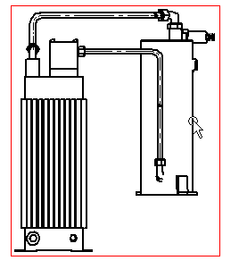
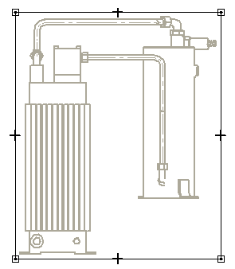
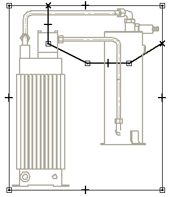
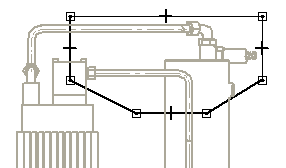
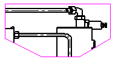

Example: Modify a drawing view cropping boundary
This example explains how to modify the drawing view cropping boundary by reusing a portion of the existing drawing view boundary.
-
Click the drawing view to modify. You can not modify the boundary of a detail view.

-
On the Drawing View Selection command bar, choose Modify Drawing View Boundary. The drawing view is displayed in a special cropping window and the rectangular boundary is converted to four endpoint connected line segments.

-
Use the 2D sketching commands to draw the custom cropping boundary. For example, you can use the Line command to draw new lines that define the custom boundary.
-
Draw the new line segments you need to define the custom cropping boundary, connecting the start and end line segments to the existing boundary.

-
Choose Sketching tab→Draw group→Trim.
-
Click the line segments that you want to remove from the boundary. The finished boundary must form a closed profile.

-
On the Home tab, choose Close Cropping Boundary to close the cropping view window and return to the drawing sheet. The drawing view is cropped along the custom boundary you drew.
